第1讲 人工智能与智能体
这一讲建立整门课的语言：先说清楚“谁在什么环境里，为了什么目标作出什么行动”，再讨论算法。搜索、逻辑、概率与学习最终都服务于这个闭环。
1.1 从电影中的智能到可研究的问题课件 1–20 页
课件先用电影、机器人、语音助手、推荐系统、自动驾驶和棋类程序展示不同形态的 AI。电影中的形象常把语言、情感、身体控制和自主目标混在一起；科研与工程必须拆成能描述、能实现、能评价的任务。例如“会开车”要拆成感知车道、预测交通参与者、规划路线、控制车辆等问题。
课件中 AlphaGo、DeepStack、Libratus 与 ChatGPT 的页面是课程背景，不是同一种算法的连续版本。公开棋盘上的博弈、隐藏手牌下的策略和语言生成，面对的信息与评价目标不同。不要从某项任务成功直接推断系统在所有任务上都具有人类能力。
人工智能的历史页可读成研究方法的变化：早期重推理与问题求解，后来强调领域知识，再到从数据学习。它们没有互相完全取代；一个现代系统仍然可能同时使用规则、搜索与学习。
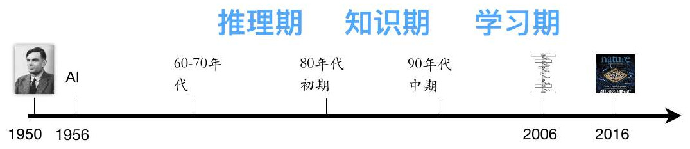
1.2 四种人工智能定义课件 15–16 页
课件用两条轴分类：目标是像人，还是符合规范性的理性标准；研究对象是内部思考过程，还是外部行动。
| 视角 | 核心问题 | 怎样判断进展 |
|---|---|---|
| 像人一样思考 | 人实际上怎样记忆、推理和决策 | 与心理实验、认知过程相比较 |
| 像人一样行动 | 系统行为能否达到人类表现 | 对话、操作、感知等行为测试 |
| 理性思考 | 结论是否遵守正确推理规则 | 逻辑形式与推导正确性 |
| 理性行动 | 给定信息后怎样行动能得到更好结果 | 目标、效用及预期表现 |
“理性”不是“知道所有真相”。你带伞后没有下雨，不等于带伞一定不合理；决策应根据当时可用信息及收益损失判断。类似地，下棋程序作出预期最好的选择后仍可能输给对手。
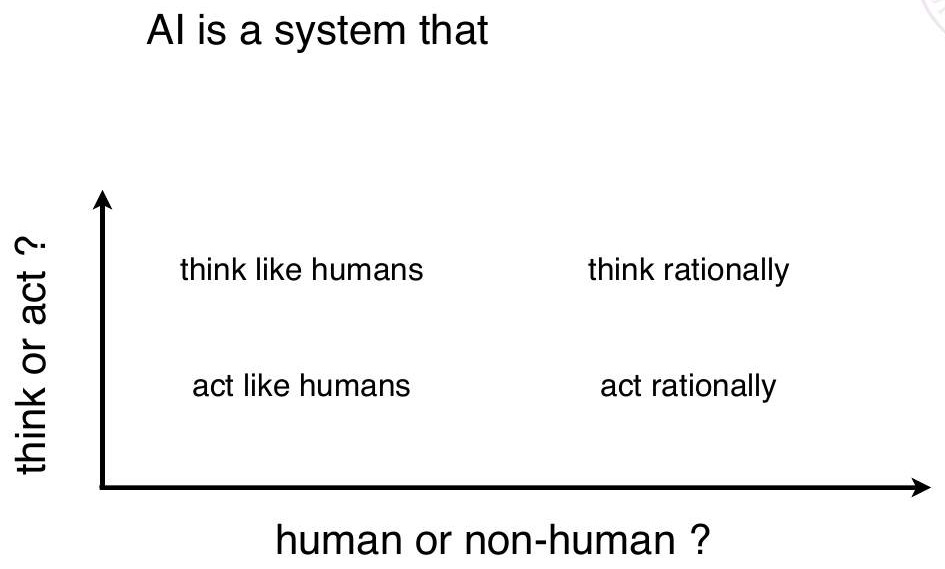
1.3 智能体与环境的闭环课件 21–25 页
智能体通过传感器获得感知，通过执行器影响环境。感知是某个时刻得到的信息，感知序列包含到目前为止的历史。智能体函数在概念上把感知序列映射为动作，智能体程序是具体实现。
吸尘器世界有 A、B 两个位置，每处可干净或脏。感知可写成 [位置,清洁状态]，动作是 Left、Right、Suck、NoOp。若机器人只知道当前格子脏不脏，就不能把“当前没有灰尘”理解成“所有地方都干净”。这说明局部感知与完整世界状态的区别。
课件的动作表展示：相同的当前感知在不同历史下可以对应不同动作。例如已经检查过两处都干净时可以停止；只见到当前一处干净时，还需要去另一处检查。历史是否保留，决定了智能体能表达怎样的策略。
吸尘器智能体：把感知映射为行动
依据 Lecture 1 · PDF第25页整理
REFLEX-VACUUM-AGENT(location, status):
if status = Dirty: return Suck
if location = A: return Right
if location = B: return Left输入是当前位置和当前格是否脏；输出是一个动作。它不搜索整条路径，也没有记录另一格的状态。这段程序展示智能体函数怎样用少量规则实现；清扫效率如何，仍由环境假设和评价标准决定。
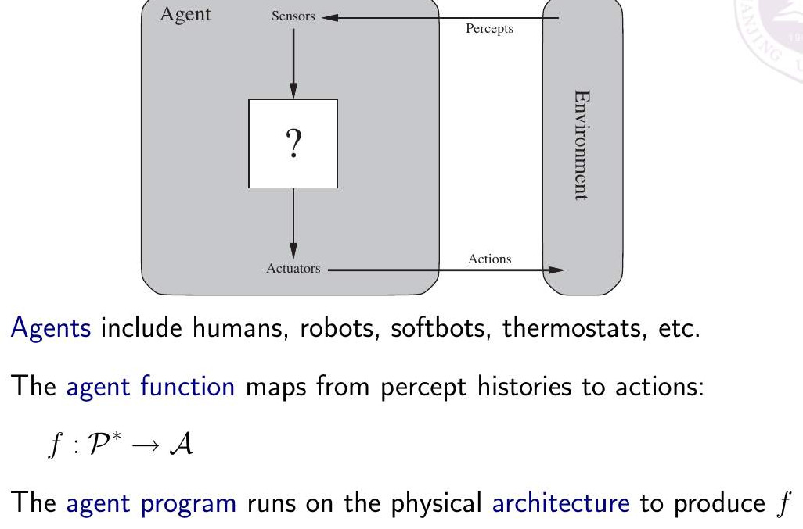
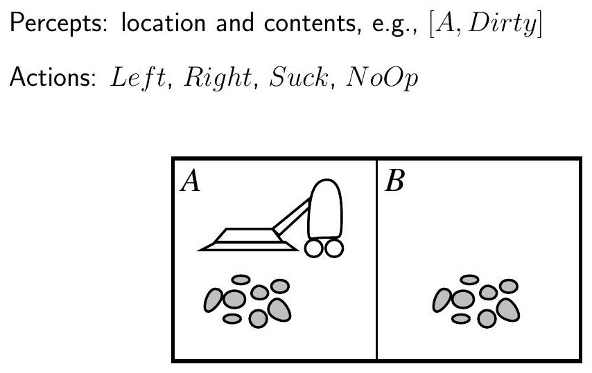
1.4 先写 PEAS 再选算法课件 26–27 页
PEAS 是任务规格的四部分：Performance measure 评价标准，Environment 环境，Actuators 执行器，Sensors 传感器。它不是算法步骤，而是设计前应明确的任务边界。
| 任务 | P 评价标准 | E 环境 | A 执行器 | S 传感器 |
|---|---|---|---|---|
| 出租车智能体 | 安全、合法、准时、成本 | 道路、车辆、乘客、天气 | 转向、油门、制动、显示 | 摄像头、定位、速度等 |
| 吸尘器 | 清洁程度、耗电、时间 | 房间、障碍物、灰尘 | 移动、吸尘 | 位置、灰尘、碰撞 |
| 黑白棋 | 胜负、响应时间 | 棋盘、规则、对手 | 合法落子、必要时pass | 棋盘和执棋方 |
设计评价时要避免“指标替代目标”。如果吸尘器按吸到灰尘的次数计分，它可能反复制造灰尘；若黑白棋只按当前棋子多寡评价，可能贪吃子而丢角。指标应尽量反映真正想实现的结果。
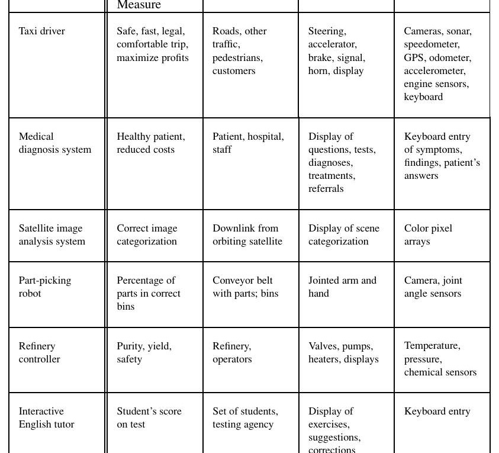
1.5 环境类型决定问题难在哪里课件 28–28 页
完全可观测表示当前感知足够获取决策所需状态；部分可观测表示信息缺失，需要内部状态、信念或概率。单智能体与多智能体的区别，在于环境中是否还存在有自己目标并影响结果的行动者。
确定性表示给定状态和动作，下一状态由规则确定；随机性表示结果服从分布。对手下一步不知道，并不意味着黑白棋翻子的规则是随机的：它是确定性、多智能体环境。
情节式任务的各次决策基本独立，例如独立分类多张照片；序贯任务中当前动作影响未来，例如导航与下棋。静态环境在决策期间不变；动态环境会继续变化。离散/连续则要分别看状态、动作和时间。
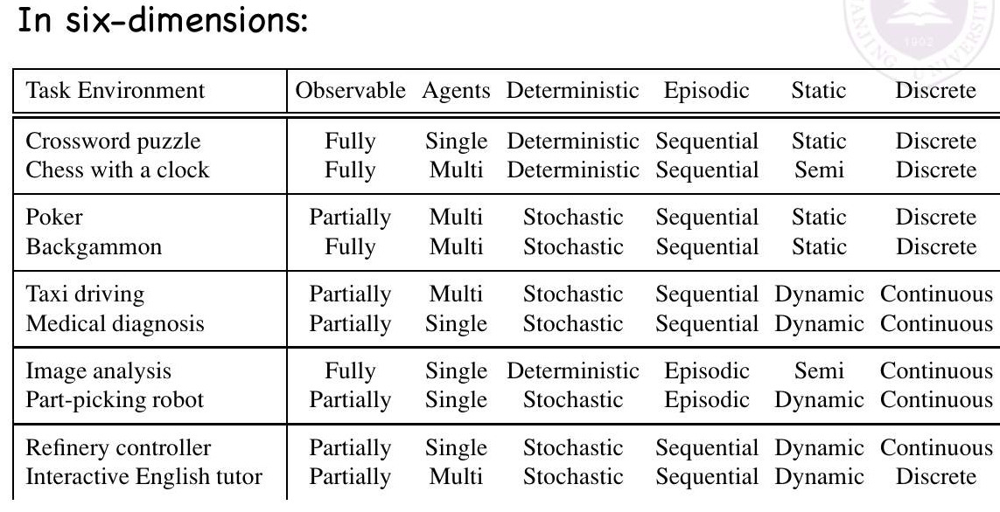
1.6 五种智能体结构课件 29–34 页
简单反射智能体使用条件—动作规则，例如“见到脏就吸”。优点是直接、响应快，缺点是不能区分当前感知相同而历史不同的情形。
带状态反射智能体维护内部状态，结合“世界怎样变化”和“我的动作造成什么变化”更新它。内部状态是对外界的模型，不保证与真实世界完全相同。
基于目标的智能体会问“执行某动作后能否到达目标”。它需要预测动作后果，因此自然引出搜索与规划。基于效用的智能体继续区分不同成功结果：同样抵达目的地，时间、费用和风险可以不同。
学习智能体包含执行部分、学习部分、评价者和问题生成器。执行部分负责当前行为；评价者给反馈；学习部分改进机制；问题生成器推动尝试有信息价值的新行动。学习不只是“多运行几遍”，而是经验实际改变了参数、知识或策略。
带内部状态的反射智能体
依据 Lecture 1 · PDF第30–34页整理
MODEL-BASED-REFLEX-AGENT(percept):
state ← UPDATE-STATE(state, previous_action, percept, world_model)
rule ← MATCH-RULE(state, rules)
action ← rule.action
previous_action ← action
return action这是对结构图的流程化改写。state 是内部估计，percept 是此刻的传感器读数，二者不能混用。学习智能体再增加 critic、learning element 和 problem generator，分别提供反馈、修改行为模块和提出探索动作。
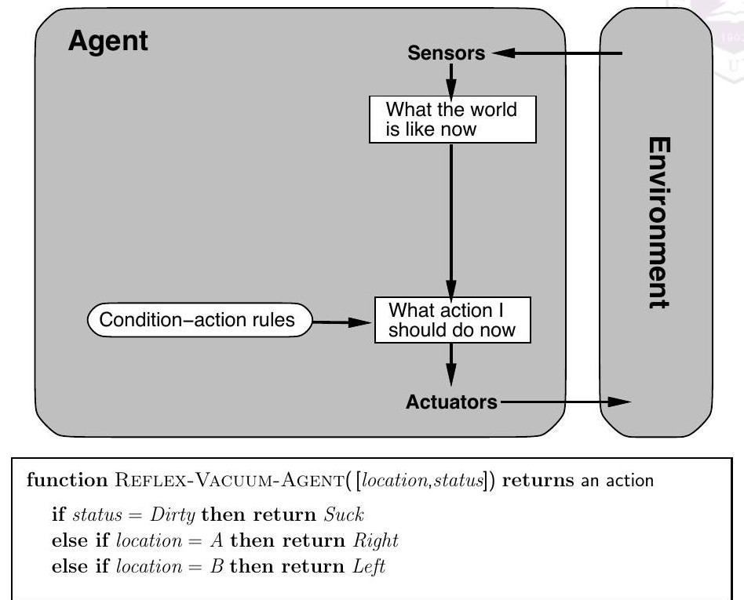
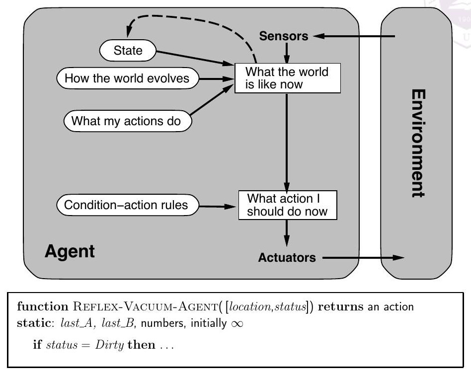
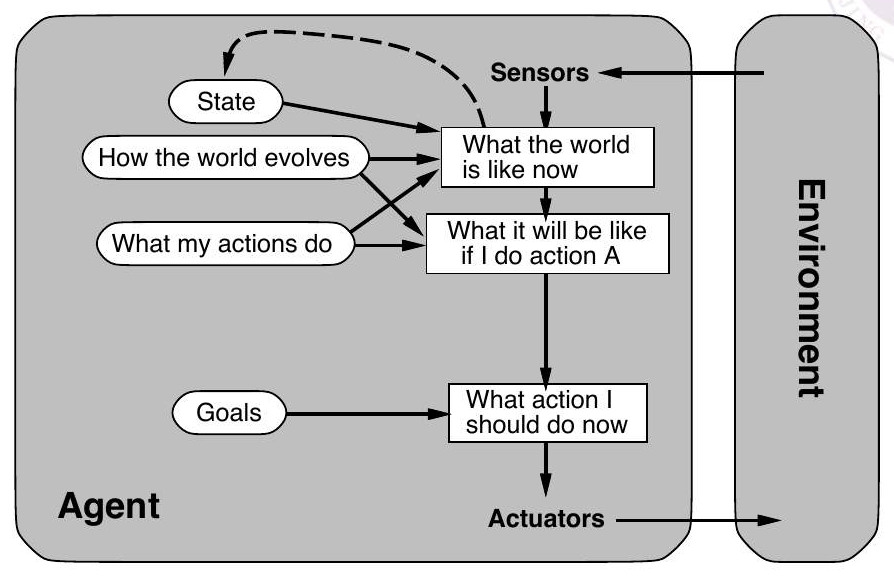
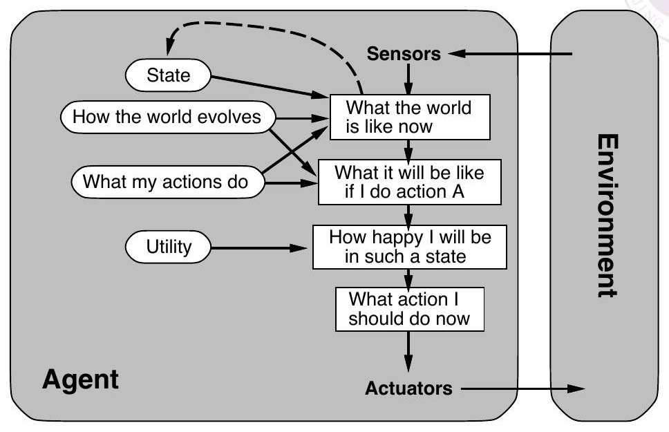
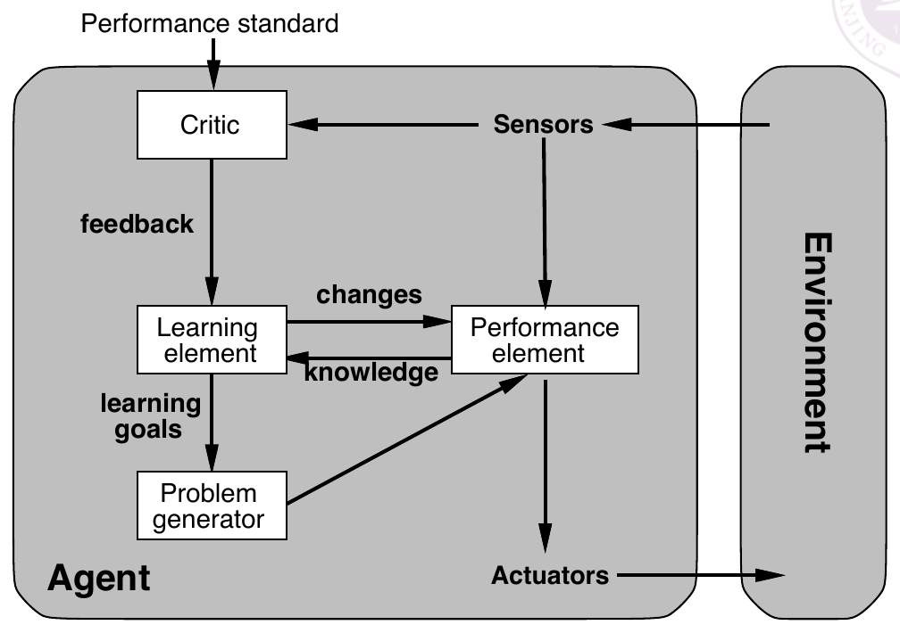
本讲自测
- 当前棋盘相同而执棋方不同，是否是同一决策状态？为什么？
- 理性行动与每次事后都获胜有什么区别？
- 用 PEAS 描述一个校园送餐机器人，并判断它是否完全可观测。
查看解答要点
1. 不是，合法动作与行动利益方不同。2. 理性根据决策时的信息和预期表现评价，结果还有不确定因素。3. 评价包括及时安全送达，环境包含道路行人，执行器负责移动与交付，传感器负责定位与感知；盲区、遮挡与他人意图未知使其通常部分可观测。